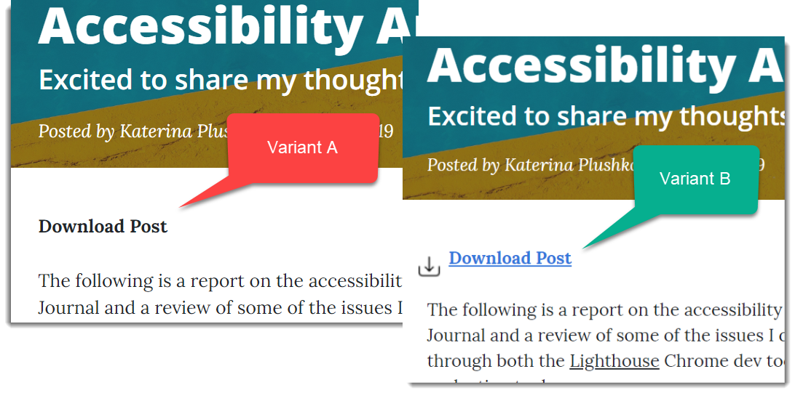

The true method of knowledge is experiment. - William Blake
Once the numbers started coming in on the two goals I had set up, one being an event, it was time to see about ways to optimize them. I did some usability testing with some of my known visitors and found that when discussing the pages, many had pointed out that they had not noticed the "download post" link I had set up for easy downloads of my posts. In my initial haste to set up the pages I had set up the link but not updated any of the css to make it stand out. In it's original version it the text color is black, no underline and it doesn't really stand out in any way from the rest of the content in any way. Unless the visitor hovered over the link, it was unlikely they would be able to tell that it was a link at all.
First I looked into Google Analytics Content Experiments. Content Experiments allow the developer to create a variant of a webpage and test different variants on users. These experiments report out under the Behavior Tab in Google Analytics under the Experiments view. When I went to check out the view under the Behavior tab, I got the following message, "Google Optimize is the free, preferred way to run experiments. Analytics Content Experiments remain available but are being deprecated in the future. Learn more about Optimize." Google Optimize works with Google Analytics and provides an enhanced experience of what the Content Experiments had provided. Optimize allows the developer to test variants of their web pages on users and reports out which variants performed best.
To hook up Google Optimize, you need the following:
- Google Analytics installed on your website
- The Chrome web browser
- The Optimize Chrome extension
If you have all those set up you can go to Google Optimize and set up an account. Once that is complete just a single line of code needs to be added to your global site tag that you used to set up Google Analytics tracking on the pages you are testing.
A/B Testing
Once the your Google Optimize account is set up and you've created your container for A/B testing, you can start creating a variant. I decided to create a variant of my Post 6 Download Link. The original (Variant A) was features the original version of my link, black, with no underline. Google Optimize allows you to create an other version for page right from the the Optimize page with a visual editor. Once you've created a Variant B you can test the different looks or features on all visitors or customize who gets what view.

I knew I needed to make the "Download Post" link more visible so for my Variant B I brightened up the text color, added an underline to emphasize the link and added the universal icon for downloads.
Further testing determined the changes were beneficial to a visitors chances of seeing the link and clicking on it, which in turn increased the my goal results.